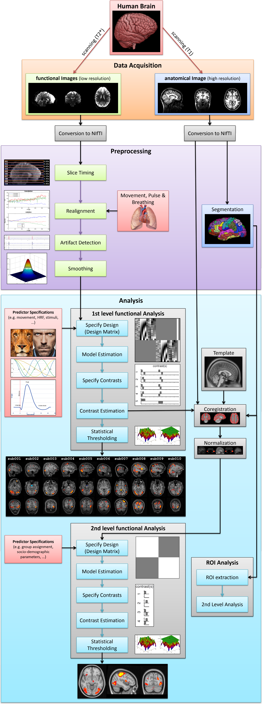

As you’ve seen in the previous chapter, there are many steps involved in the analysis of neuroimaging data. And there are even more possibilities to combine them. And adding to all this complexity, there are often numerous different software packages for each step. This is where Nipype can help you. Changing the order of preprocessing or analysis steps is as simple as changing the flow of a workflow.
Let’s get back to the steps involved in the analysis of fMRI data from the previous chapter. Keep in mind that this is only one possible way of preprocessing and analyzing fMRI data. But if we connect up all the different steps into one big workflow we end up with the following structure.
This all seems to be really big and complex. And what if you want to first want to do a motion correction and than a slice timing correction? Or add an additional step into a already established analysis. With Nipype, this is very easy.
Nipype enables you to create the exact workflow that you want and gives you the opportunity to switch between the software packages (e.g. FreeSurfer, FSL, SPM, ANTs, AFNI,...) as you like. The power to analyze your data exactly as you want it lies in your hand.
Let’s get back to the workflow above. In the world of Nipype, this neuroimaging workflow would look something like this:
As you can see, each step of the process is represented by a node in the workflow (e.g. Motion Correction, Coregistration, Normalization, Smoothing, Model Estimation). And each of those nodes can come from a different software package (e.g. FreeSurfer, FSL, SPM, ANTs, AFNI, Nipype). The freedom to chose the software package to use, to guide the flow and sequential order of the execution is completely up to you. Even if you want to run a node with different parameters (e.g. fwhm = 4 and 8) this can be done with no problem. And the great thing about all this. All of those steps can be done in parallel!
If you understand those concepts, you will be able to use Nipype in no time. Because this is all there is to know about Nipype. But before we’ll start with the first Nipype script, lets first make sure that your system is set up correctly. All about how to check that and how to install all required softwares can be found in the next chapter of this Beginner’s Guide.
Note
This guide is meant as a general introduction. The implementation of Nipype is nearly unlimited and there is a lot of advanced knowledge that won’t be covered by this guide. But you can look it up at various places on the Nipype homepage. A lot of very good tutorials and examples about the usage of workflows for specific situations can be found here: Tutorials and Examples.
{kind=link}
{kind=link}